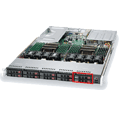
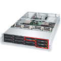
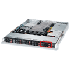
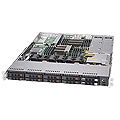
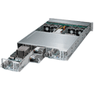
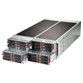
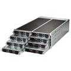
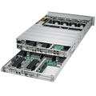
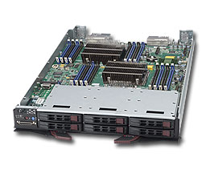
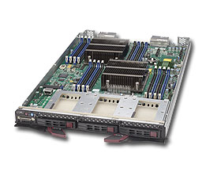

Supermicro® NWMe Superserver® solutions
Supermicro Hot-Swappable NVMe SuperServer® Solutions support Intel® Solid-State Drive DC P3600 and P3700 Series.
| Supermicro® Hot-Swappable NVMe Platforms | 2.5” Hot-Swap NVMe SSD Capacity | System SKU | CPU Configuration |
| Ultra Series NVMe SuperServers | |||
1U Ultra  |
Capacity: 2x NVMe drives |
2x Intel® Xeon® Processor E5-2600 v3 | |
2U Ultra
|
Capacity: 4x NVMe drives Virtualization hosting, cloud computing, datacenter, low-latency computing, low-latency/high-frequency trading |
SYS-2028U-TNR4T+ SYS-2028U-TNRT+ |
2x Intel® Xeon® Processor E5-2600 v3 |
2U Ultra  |
Capacity: 4x NVMe drives Virtualization hosting, cloud computing, datacenter, low-latency computing, low-latency/high-frequency trading |
SYS-6028U-TNR4T+ SYS-6028U-TNRT+ |
2x Intel® Xeon® Processor E5-2600 v3 |
| WIO NVMe SuperServers | |||
1U WIO  |
Capacity: 2x NVMe drives Cloud and other virtualization needs, hosting and application delivery, database processing and storage, simulation, automation Expandability with wide range of I/O options |
SYS-1028R-WC1R SYS-1028R-WC1RT |
2x Intel® Xeon® Processor E5-2600 v3 |
1U WIO  |
Capacity: 2x NVMe drives Cloud and other virtualization needs, hosting and application delivery, database processing and storage, simulation, automation Expandability with wide range of I/O options |
SYS-1027R-WC1NR SYS-1027R-WC1NRT |
2x Intel® Xeon® Processor E5-2600 v2 |
2U WIO (3.5” Drive Bays)
|
Capacity: 4x NVMe drives Cloud and other virtualization needs, hosting and application delivery, database processing and storage, simulation, automation Expandability with wide range of I/O options |
SYS-6028R-TDWNR | SYS-6028R-TDWNR |
| TwinPro™ NVMe SuperServers | |||
2U TwinPro™
|
Capacity: 4x NVMe drives per node High-end enterprise, HPC cluster, datacenter, cloud computing |
SYS-2028TP-DNCR SYS-2028TP-DNCTR SYS-2028TP-DNCFR |
2x Nodes Each node supporting: 2x Intel® Xeon® Processor E5-2600 v3 |
2U TwinPro™  |
Capacity: 4x NVMe drives per node High-end enterprise, HPC cluster, datacenter, cloud computing |
SYS-6028TP-DNCR SYS-6028TP-DNCTR SYS-6028TP-DNCFR |
2x Nodes Each node supporting: 2x Intel® Xeon® Processor E5-2600 v3 |
| FatTwin™ SuperServers | |||
4U FatTwin™
|
Capacity: 2x NVMe drives per node Enterprise, datacenter, cloud computing, HPC, financial, science and engineering, file and storage servers |
SYS-F628R3-RTBN+ | 4x Nodes Each node supporting: 2x Intel® Xeon® Processor E5-2600 v3 |
4U FatTwin™  |
Capacity: 2x NVMe drives per node Enterprise, datacenter, cloud computing, HPC, financial, science and engineering, file and storage servers |
SYS-F628R3-RC1B+ SYS-F628R3-RC1BPT+ |
4x Nodes Each node supporting: 2x Intel® Xeon® Processor E5-2600 v3 |
4U FatTwin™  |
Capacity: 2x NVMe drives per node Enterprise, datacenter, cloud computing, HPC, financial, science and engineering, file and storage servers |
SYS-F618R2-RC1+ SYS-F618R2-RC1PT+ |
8x Nodes Each node supporting: 2x Intel® Xeon® Processor E5-2600 v3 |
| EX DP 32 DIMM SuperServers | |||
2U EX DP 32 DIMM  |
Capacity: 2x NVMe drives per node Extreme analytics, in-memory database, and mission-critical business applications |
SYS-2028UT-BTNRT (SATA3) SYS-2028UT-BC1NRT (SAS3) |
2x Nodes Each node supporting: 2x Intel® Xeon® Processor E7-8800/4800/2800 v2 |
| 7U SuperBlade® | |||
StorageBlade  |
Capacity: 3x NVMe drives Virtualization, simulation, automation, and database applications in high-end enterprise, datacenter, and cloud environments |
SBI-7128R-C6 | 10x Blades in 7U Each node supporting: 2x Intel® Xeon® Processor E5-2600 v3 |
DataCenter Blade  |
Capacity: 3x NVMe drives Virtualization, simulation, automation, and database applications in high-end enterprise, datacenter, and cloud environments |
SBI-7428R-C3 | 14x Blades in 7U Each node supporting: 2x Intel® Xeon® Processor E5-2600 v3 |
DataCenter Blade |
Capacity: 3x NVMe drives Virtualization, simulation, automation, and database applications in high-end enterprise, datacenter, and cloud environments | SBI-7428R-T3 | 14x Blades in 7U Each node supporting: 2x Intel® Xeon® Processor E5-2600 v3 |